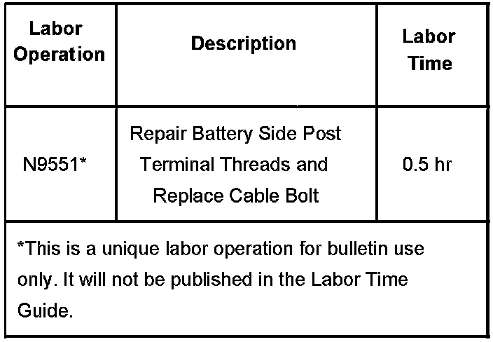
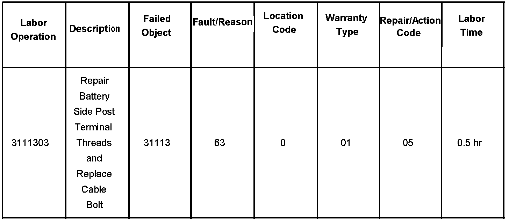

Starting System - Engine No Start/No Crank Condition
Bulletin No.: 02-06-04-015ADate: March 07, 2006
TECHNICAL
Subject:
Intermittent No Crank, No Start (Clean Battery Side Terminal Stripped Threads, Replace Battery Cable Bolt)
Models:
2001-2007 GM Passenger Cars and Light-Duty Trucks (Including Saturn)
2003-2007 HUMMER H2
2006-2007 HUMMER H3
2005-2007 Saab 9-7X
with Side-Mounted Battery Terminals
Supercede:
This bulletin is being revised to update the models and provide a new labor operation number for this repair. Please discard Corporate Bulletin Numbers 02-06-04-015 and 03-06-03-006A (Section 06 - Engine/Propulsion System).
Condition
Some customers may comment on an intermittent no crank, no start condition.
Cause
This condition may be due to poor battery cable connections. Cross-threaded/stripped battery cable bolts inside the battery side post terminals may cause poor battery cable connections.
Correction
To avoid replacing the battery , do the following steps:
^ Clean the threads in the battery side post terminals using a 3/8" (# 16) NC bottom tap.
^ Replace the battery cable bolt.
The battery cable bolt is serviced separately from the cable and is available from your Parts Department. Be sure to use the correct bolt.
Warranty Information

For vehicles repaired under warranty, use the table.
Warranty Information (Saab U.S. Models)

For vehicles repaired under warranty, use the table.

Disclaimer